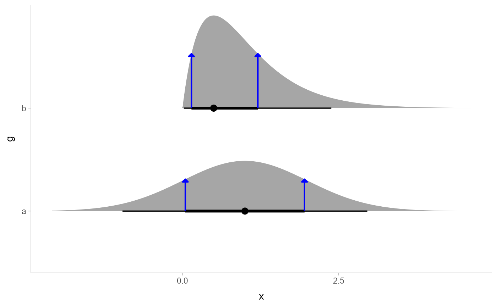
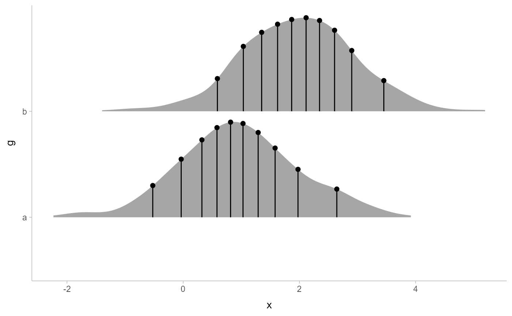
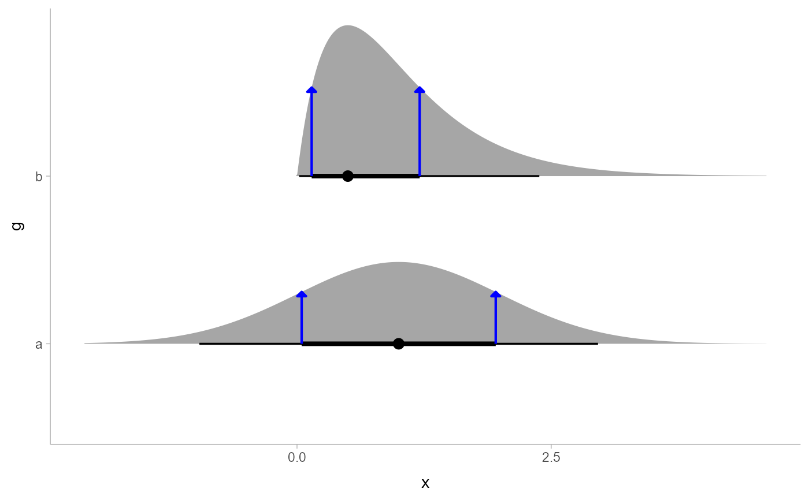
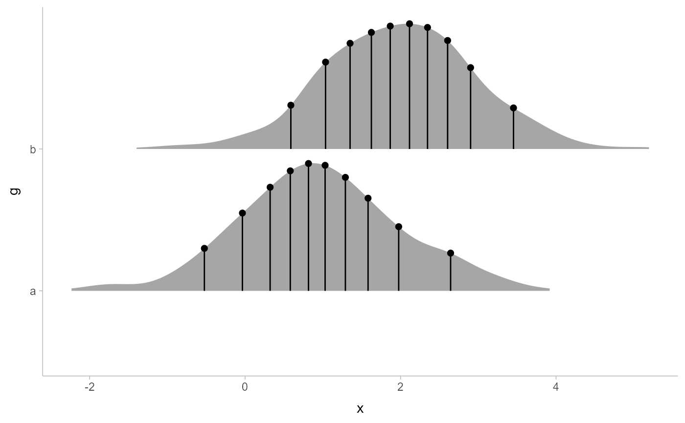

Stat for drawing "spikes" (optionally with points on them) at specific points
on a distribution (numerical or determined as a function of the distribution),
intended for annotating stat_slabinterval() geometries.
Usage
stat_spike(
mapping = NULL,
data = NULL,
geom = "spike",
position = "identity",
...,
at = "median",
p_limits = c(NA, NA),
density = "bounded",
adjust = 1,
trim = TRUE,
expand = FALSE,
breaks = "Sturges",
align = "none",
outline_bars = FALSE,
slab_type = NULL,
limits = NULL,
n = 501,
orientation = NA,
na.rm = FALSE,
show.legend = NA,
inherit.aes = TRUE
)Arguments
- mapping
Set of aesthetic mappings created by
aes(). If specified andinherit.aes = TRUE(the default), it is combined with the default mapping at the top level of the plot. You must supplymappingif there is no plot mapping.- data
The data to be displayed in this layer. There are three options:
If
NULL, the default, the data is inherited from the plot data as specified in the call toggplot().A
data.frame, or other object, will override the plot data. All objects will be fortified to produce a data frame. Seefortify()for which variables will be created.A
functionwill be called with a single argument, the plot data. The return value must be adata.frame, and will be used as the layer data. Afunctioncan be created from aformula(e.g.~ head(.x, 10)).- geom
Use to override the default connection between
stat_spike()andgeom_spike()- position
Position adjustment, either as a string, or the result of a call to a position adjustment function. Setting this equal to
"dodge"(position_dodge()) or"dodgejust"(position_dodgejust()) can be useful if you have overlapping geometries.- ...
Other arguments passed to
layer(). These are often aesthetics, used to set an aesthetic to a fixed value, likecolour = "red"orlinewidth = 3(see Aesthetics, below). They may also be parameters to the paired geom/stat. When paired with the default geom,geom_spike(), these include:normalizeHow to normalize heights of functions input to the
thicknessaesthetic. One of:"all": normalize so that the maximum height across all data is1."panels": normalize within panels so that the maximum height in each panel is1."xy": normalize within the x/y axis opposite theorientationof this geom so that the maximum height at each value of the opposite axis is1."groups": normalize within values of the opposite axis and within each group so that the maximum height in each group is1."none": values are taken as is with no normalization (this should probably only be used with functions whose values are in [0,1], such as CDFs).
For a comprehensive discussion and examples of slab scaling and normalization, see the
thicknessscale article.arrowgrid::arrow()giving the arrow heads to use on the spike, orNULLfor no arrows.subguideSub-guide used to annotate the
thicknessscale. One of:A function that takes a
scaleargument giving a ggplot2::Scale object and anorientationargument giving the orientation of the geometry and then returns a grid::grob that will draw the axis annotation, such assubguide_axis()(to draw a traditional axis) orsubguide_none()(to draw no annotation). Seesubguide_axis()for a list of possibilities and examples.A string giving the name of such a function when prefixed with
"subguide"; e.g."axis"or"none".
- at
The points at which to evaluate the PDF and CDF of the distribution. One of:
numeric vector: points to evaluate the PDF and CDF of the distributions at.
function or character vector: function (or names of functions) which, when applied on a distribution-like object (e.g. a distributional object or a
posterior::rvar()), returns a vector of values to evaluate the distribution functions at.a list where each element is any of the above (e.g. a numeric, function, or name of a function): the evaluation points determined by each element of the list are concatenated together. This means, e.g.,
c(0, median, qi)would add a spike at0, the median, and the endpoints of theqiof the distribution.
The values of
atare also converted into a character vector which is supplied as a computed variable (also calledat) generated by thisstat, which can be mapped onto aesthetics usingafter_stat(). Non-empty names can be used to override the values of the computed variable; e.g.at = c(zero = 0, "median", mode = "Mode")will generate a computed variable with the valuesc("zero", "median", "mode")that is evaluated at0, the median, and the mode of the distribution.- p_limits
Probability limits (as a vector of size 2) used to determine the lower and upper limits of theoretical distributions (distributions from samples ignore this parameter and determine their limits based on the limits of the sample). E.g., if this is
c(.001, .999), then a slab is drawn for the distribution from the quantile atp = .001to the quantile atp = .999. If the lower (respectively upper) limit isNA, then the lower (upper) limit will be the minimum (maximum) of the distribution's support if it is finite, and0.001(0.999) if it is not finite. E.g., ifp_limitsisc(NA, NA), on a gamma distribution the effective value ofp_limitswould bec(0, .999)since the gamma distribution is defined on(0, Inf); whereas on a normal distribution it would be equivalent toc(.001, .999)since the normal distribution is defined on(-Inf, Inf).- density
Density estimator for sample data. One of:
A function which takes a numeric vector and returns a list with elements
x(giving grid points for the density estimator) andy(the corresponding densities). ggdist provides a family of functions following this format, includingdensity_unbounded()anddensity_bounded(). This format is also compatible withstats::density().A string giving the suffix of a function name that starts with
"density_"; e.g."bounded"for[density_bounded()],"unbounded"for[density_unbounded()], or"histogram"fordensity_histogram(). Defaults to"bounded", i.e.density_bounded(), which estimates the bounds from the data and then uses a bounded density estimator based on the reflection method.
- adjust
Passed to
density: the bandwidth for the density estimator for sample data is adjusted by multiplying it by this value. See e.g.density_bounded()for more information.- trim
For sample data, should the density estimate be trimmed to the range of the data? Passed on to the density estimator; see the
densityparameter. DefaultTRUE.- expand
For sample data, should the slab be expanded to the limits of the scale? Default
FALSE. Can be length two to control expansion to the lower and upper limit respectively.- breaks
Determines the breakpoints defining bins. Similar to (but not exactly the same as) the
breaksargument tographics::hist(). One of:A scalar (length-1) numeric giving the number of bins
A vector numeric giving the breakpoints between histogram bins
A function taking
xandweightsand returning either the number of bins or a vector of breakpointsA string giving the suffix of a function that starts with
"breaks_". ggdist provides weighted implementations of the"Sturges","Scott", and"FD"break-finding algorithms fromgraphics::hist(), as well asbreaks_fixed()for manually setting the bin width. See breaks.
For example,
breaks = "Sturges"will use thebreaks_Sturges()algorithm,breaks = 9will create 9 bins, andbreaks = breaks_fixed(width = 1)will set the bin width to1.- align
Determines how to align the breakpoints defining bins. One of:
A scalar (length-1) numeric giving an offset that is subtracted from the breaks. The offset must be between
0and the bin width.A function taking a sorted vector of
breaks(bin edges) and returning an offset to subtract from the breaks.A string giving the suffix of a function that starts with
"align_"used to determine the alignment, such asalign_none(),align_boundary(), oralign_center().
For example,
align = "none"will provide no alignment,align = align_center(at = 0)will center a bin on0, andalign = align_boundary(at = 0)will align a bin edge on0.- outline_bars
For sample data (if
densityis"histogram") and for discrete analytical distributions (whose slabs are drawn as histograms), determines if outlines in between the bars are drawn when theslab_coloraesthetic is used. IfFALSE(the default), the outline is drawn only along the tops of the bars; ifTRUE, outlines in between bars are also drawn. Seedensity_histogram().- slab_type
(deprecated) The type of slab function to calculate: probability density (or mass) function (
"pdf"), cumulative distribution function ("cdf"), or complementary CDF ("ccdf"). Instead of usingslab_typeto changefand then mappingfonto an aesthetic, it is now recommended to simply map the corresponding computed variable (e.g.pdf,cdf, or1 - cdf) directly onto the desired aesthetic.- limits
Manually-specified limits for the slab, as a vector of length two. These limits are combined with those computed based on
p_limitsas well as the limits defined by the scales of the plot to determine the limits used to draw the slab functions: these limits specify the maximal limits; i.e., if specified, the limits will not be wider than these (but may be narrower). UseNAto leave a limit alone; e.g.limits = c(0, NA)will ensure that the lower limit does not go below 0, but let the upper limit be determined by eitherp_limitsor the scale settings.- n
Number of points at which to evaluate the function that defines the slab.
- orientation
Whether this geom is drawn horizontally or vertically. One of:
NA(default): automatically detect the orientation based on how the aesthetics are assigned. Automatic detection works most of the time."horizontal"(or"y"): draw horizontally, using theyaesthetic to identify different groups. For each group, uses thex,xmin,xmax, andthicknessaesthetics to draw points, intervals, and slabs."vertical"(or"x"): draw vertically, using thexaesthetic to identify different groups. For each group, uses they,ymin,ymax, andthicknessaesthetics to draw points, intervals, and slabs.
For compatibility with the base ggplot naming scheme for
orientation,"x"can be used as an alias for"vertical"and"y"as an alias for"horizontal"(ggdist had anorientationparameter before base ggplot did, hence the discrepancy).- na.rm
If
FALSE, the default, missing values are removed with a warning. IfTRUE, missing values are silently removed.- show.legend
Should this layer be included in the legends? Default is
c(size = FALSE), unlike most geoms, to match its common use cases.FALSEhides all legends,TRUEshows all legends, andNAshows only those that are mapped (the default for most geoms).- inherit.aes
If
FALSE, overrides the default aesthetics, rather than combining with them. This is most useful for helper functions that define both data and aesthetics and shouldn't inherit behaviour from the default plot specification, e.g.borders().
Value
A ggplot2::Stat representing a spike geometry which can be added to a ggplot() object.
Details
This stat computes slab values (i.e. PDF and CDF values) at specified locations
on a distribution, as determined by the at parameter.
To visualize sample data, such as a data distribution, samples from a
bootstrap distribution, or a Bayesian posterior, you can supply samples to
the x or y aesthetic.
To visualize analytical distributions, you can use the xdist or ydist
aesthetic. For historical reasons, you can also use dist to specify the distribution, though
this is not recommended as it does not work as well with orientation detection.
These aesthetics can be used as follows:
xdist,ydist, anddistcan be any distribution object from the distributional package (dist_normal(),dist_beta(), etc) or can be aposterior::rvar()object. Since these functions are vectorized, other columns can be passed directly to them in anaes()specification; e.g.aes(dist = dist_normal(mu, sigma))will work ifmuandsigmaare columns in the input data frame.distcan be a character vector giving the distribution name. Then thearg1, ...arg9aesthetics (orargsas a list column) specify distribution arguments. Distribution names should correspond to R functions that have"p","q", and"d"functions; e.g."norm"is a valid distribution name because R defines thepnorm(),qnorm(), anddnorm()functions for Normal distributions.See the
parse_dist()function for a useful way to generatedistandargsvalues from human-readable distribution specs (like"normal(0,1)"). Such specs are also produced by other packages (like thebrms::get_priorfunction in brms); thus,parse_dist()combined with the stats described here can help you visualize the output of those functions.
Aesthetics
The spike geom has a wide variety of aesthetics that control
the appearance of its two sub-geometries: the spike and the point.
These stats support the following aesthetics:
x: x position of the geometry (when orientation ="vertical"); or sample data to be summarized (whenorientation = "horizontal"with sample data).y: y position of the geometry (when orientation ="horizontal"); or sample data to be summarized (whenorientation = "vertical"with sample data).xdist: When using analytical distributions, distribution to map on the x axis: a distributional object (e.g.dist_normal()) or aposterior::rvar()object.ydist: When using analytical distributions, distribution to map on the y axis: a distributional object (e.g.dist_normal()) or aposterior::rvar()object.dist: When using analytical distributions, a name of a distribution (e.g."norm"), a distributional object (e.g.dist_normal()), or aposterior::rvar()object. See Details.args: Distribution arguments (argsorarg1, ...arg9). See Details.
In addition, in their default configuration (paired with geom_spike())
the following aesthetics are supported by the underlying geom:
Spike-specific (aka Slab-specific) aesthetics
thickness: The thickness of the slab at eachxvalue (iforientation = "horizontal") oryvalue (iforientation = "vertical") of the slab.side: Which side to place the slab on."topright","top", and"right"are synonyms which cause the slab to be drawn on the top or the right depending on iforientationis"horizontal"or"vertical"."bottomleft","bottom", and"left"are synonyms which cause the slab to be drawn on the bottom or the left depending on iforientationis"horizontal"or"vertical"."topleft"causes the slab to be drawn on the top or the left, and"bottomright"causes the slab to be drawn on the bottom or the right."both"draws the slab mirrored on both sides (as in a violin plot).scale: What proportion of the region allocated to this geom to use to draw the slab. Ifscale = 1, slabs that use the maximum range will just touch each other. Default is0.9to leave some space between adjacent slabs. For a comprehensive discussion and examples of slab scaling and normalization, see thethicknessscale article.
Color aesthetics
colour: (orcolor) The color of the spike and point sub-geometries.fill: The fill color of the point sub-geometry.alpha: The opacity of the spike and point sub-geometries.colour_ramp: (orcolor_ramp) A secondary scale that modifies thecolorscale to "ramp" to another color. Seescale_colour_ramp()for examples.fill_ramp: A secondary scale that modifies thefillscale to "ramp" to another color. Seescale_fill_ramp()for examples.
Line aesthetics
linewidth: Width of the line used to draw the spike sub-geometry.size: Size of the point sub-geometry.stroke: Width of the outline around the point sub-geometry.linetype: Type of line (e.g.,"solid","dashed", etc) used to draw the spike.
Other aesthetics (these work as in standard geoms)
widthheightgroup
See examples of some of these aesthetics in action in vignette("slabinterval").
Learn more about the sub-geom override aesthetics (like interval_color) in the
scales documentation. Learn more about basic ggplot aesthetics in
vignette("ggplot2-specs").
Computed Variables
The following variables are computed by this stat and made available for
use in aesthetic specifications (aes()) using the after_stat()
function or the after_stat argument of stage():
xory: For slabs, the input values to the slab function. For intervals, the point summary from the interval function. Whether it isxorydepends onorientationxminorymin: For intervals, the lower end of the interval from the interval function.xmaxorymax: For intervals, the upper end of the interval from the interval function..width: For intervals, the interval width as a numeric value in[0, 1]. For slabs, the width of the smallest interval containing that value of the slab.level: For intervals, the interval width as an ordered factor. For slabs, the level of the smallest interval containing that value of the slab.pdf: For slabs, the probability density function (PDF). Ifoptions("ggdist.experimental.slab_data_in_intervals")isTRUE: For intervals, the PDF at the point summary; intervals also havepdf_minandpdf_maxfor the PDF at the lower and upper ends of the interval.cdf: For slabs, the cumulative distribution function. Ifoptions("ggdist.experimental.slab_data_in_intervals")isTRUE: For intervals, the CDF at the point summary; intervals also havecdf_minandcdf_maxfor the CDF at the lower and upper ends of the interval.n: For slabs, the number of data points summarized into that slab. If the slab was created from an analytical distribution via thexdist,ydist, ordistaesthetic,nwill beInf.f: (deprecated) For slabs, the output values from the slab function (such as the PDF, CDF, or CCDF), determined byslab_type. Instead of usingslab_typeto changefand then mappingfonto an aesthetic, it is now recommended to simply map the corresponding computed variable (e.g.pdf,cdf, or1 - cdf) directly onto the desired aesthetic.at: For spikes, a character vector of names of the functions or expressions used to determine the points at which the slab functions were evaluated to create spikes. Values of this computed variable are determined by theatparameter; see its description above.
See also
See geom_spike() for the geom underlying this stat.
See stat_slabinterval() for the stat this shortcut is based on.
Other slabinterval stats:
stat_ccdfinterval(),
stat_cdfinterval(),
stat_eye(),
stat_gradientinterval(),
stat_halfeye(),
stat_histinterval(),
stat_interval(),
stat_pointinterval(),
stat_slab()
Examples
library(ggplot2)
library(distributional)
library(dplyr)
df = tibble(
d = c(dist_normal(1), dist_gamma(2,2)), g = c("a", "b")
)
# annotate the density at the mode of a distribution
df %>%
ggplot(aes(y = g, xdist = d)) +
stat_slab(aes(xdist = d)) +
stat_spike(at = "Mode") +
# need shared thickness scale so that stat_slab and geom_spike line up
scale_thickness_shared()
 # annotate the endpoints of intervals of a distribution
# here we'll use an arrow instead of a point by setting size = 0
arrow_spec = arrow(angle = 45, type = "closed", length = unit(4, "pt"))
df %>%
ggplot(aes(y = g, xdist = d)) +
stat_halfeye(point_interval = mode_hdci) +
stat_spike(
at = function(x) hdci(x, .width = .66),
size = 0, arrow = arrow_spec, color = "blue", linewidth = 0.75
) +
scale_thickness_shared()

# annotate quantiles of a sample
set.seed(1234)
data.frame(x = rnorm(1000, 1:2), g = c("a","b")) %>%
ggplot(aes(x, g)) +
stat_slab() +
stat_spike(at = function(x) quantile(x, ppoints(10))) +
scale_thickness_shared()

# annotate the endpoints of intervals of a distribution
# here we'll use an arrow instead of a point by setting size = 0
arrow_spec = arrow(angle = 45, type = "closed", length = unit(4, "pt"))
df %>%
ggplot(aes(y = g, xdist = d)) +
stat_halfeye(point_interval = mode_hdci) +
stat_spike(
at = function(x) hdci(x, .width = .66),
size = 0, arrow = arrow_spec, color = "blue", linewidth = 0.75
) +
scale_thickness_shared()

# annotate quantiles of a sample
set.seed(1234)
data.frame(x = rnorm(1000, 1:2), g = c("a","b")) %>%
ggplot(aes(x, g)) +
stat_slab() +
stat_spike(at = function(x) quantile(x, ppoints(10))) +
scale_thickness_shared()
